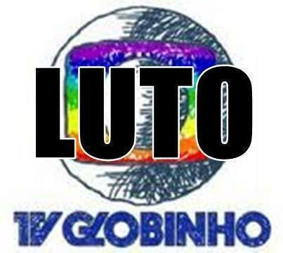

Sobre o Monstro
Fátima Gomes Bernardes (Rio de Janeiro, 17 de setembro de 1962), ou simplesmente Fátima Bernardes, é uma jornalista e apresentadora de televisão brasileira. Entrou na Rede Globo em 1987 como atriz, e depois ficou nacionalmente conhecida em 1989 apresentando o Jornal da Globo, passou também pelo Fantástico, Jornal Hoje e Jornal Nacional, onde ficou de 1998 a 2011. A partir de 2012, passou a ter um programa próprio durante as manhãs na Rede Globo chamado de Encontro com Fátima Bernardes.
O Que Fazer?
Peço que todos os fãs do maravilhoso programa TV Globinho que assinem o seguinte abaixo assinado e façam protestos em todas as redes sociais e ruas. Vamos bater as panelas e sair nas ruas pedindo a volta desse programa que Fatima Bernades ousou tirar, ela precisa ver que juntos somos mais e podemos botar ela para fora. Impeachment Já.
Porque deve voltar?
Aqui vai alguns motivos pelo qual a TV Globinho deve voltar no lugar do programa da Fátima Bernades:
- Fátima Bernardes fez com que parasse de passar os desenhos super legais da TV Globinho para ficar pagando micos em seu programa. Os micos de Fátima Bernardes não são tão bons quanto os desenhos da TV Globinho.
- Quem aí não adorava acordar, deitar no sofá, tomar um leite quentinho com seu achocolatado favorito e acompanhar os desenhos da Tv Globinho enquanto a preguiça não ia embora? É, a vida não é a mesma sem os desenhos matinais da Globo.
- A garotada que assistia os desenhos de manha não ajudam mais o Goku a fazer a Genki Dama, deixando as manhãs sem graça e o Goku sem energias o suficiente para derrotar Freeza.
- Nenhum desenho nos ensinou tanto quanto o desenho animado do Jack Chan. E com certeza vocês ainda se lembram das palavras que o tio do Jack Chan usava para fazer as mágicas: Umo Buga Feidital, Umo Buga Feidital.
- E quem acha que os desenhos só eram baseados em super heróis masculinos, está completamente enganado. Na TV Globinho passava também heroínas mulheres, como Kim Impossible e Três Espiãs Demais.